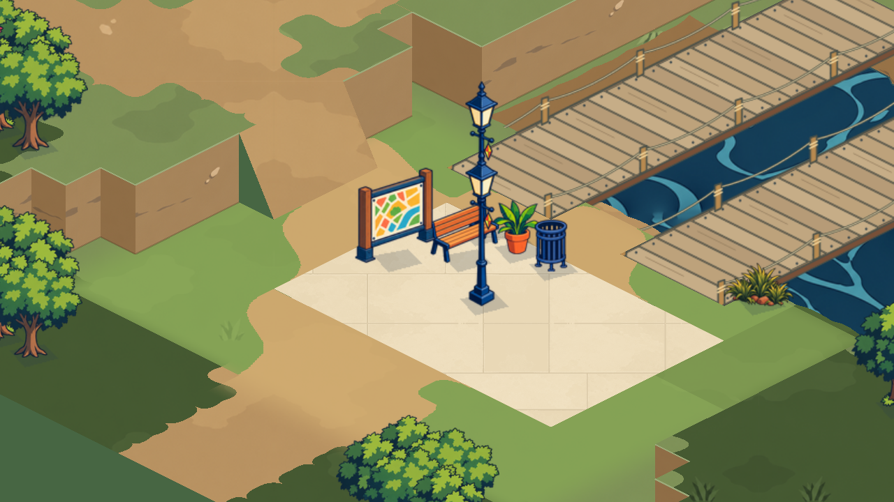
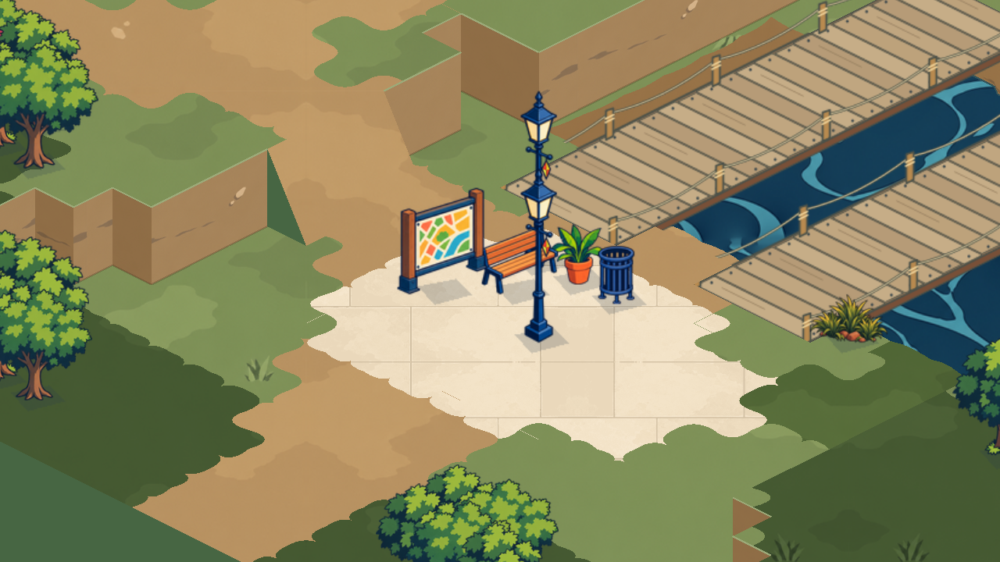
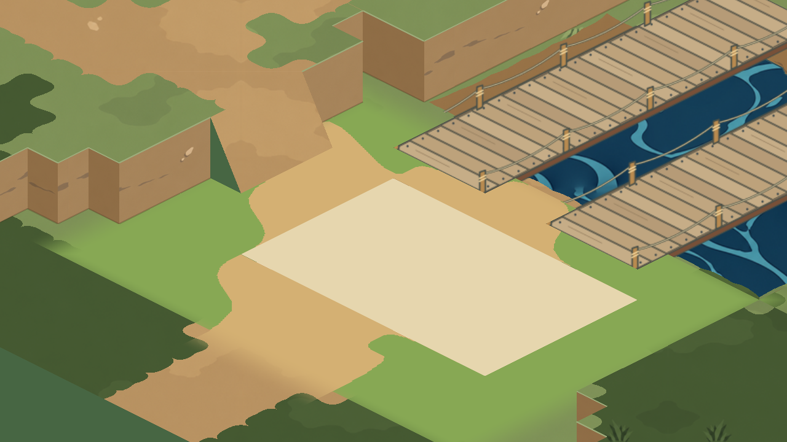

SOULMONSTERS · TESTE LOCAL · 29.10.2026
Um trecho, duas versões.
Arraste o controle para comparar a mesma câmera. O piloto troca o contorno e acalma a pintura perto da praça; os arredores continuam com o piso anterior. A campanha ainda não recebeu essa mudança.


ANTESPILOTOA forma sem a textura
Vista de diagnóstico, sem os objetos cadastrados e com materiais chapados no centro do piloto. As curvas antigas fora da área experimental continuam visíveis.
